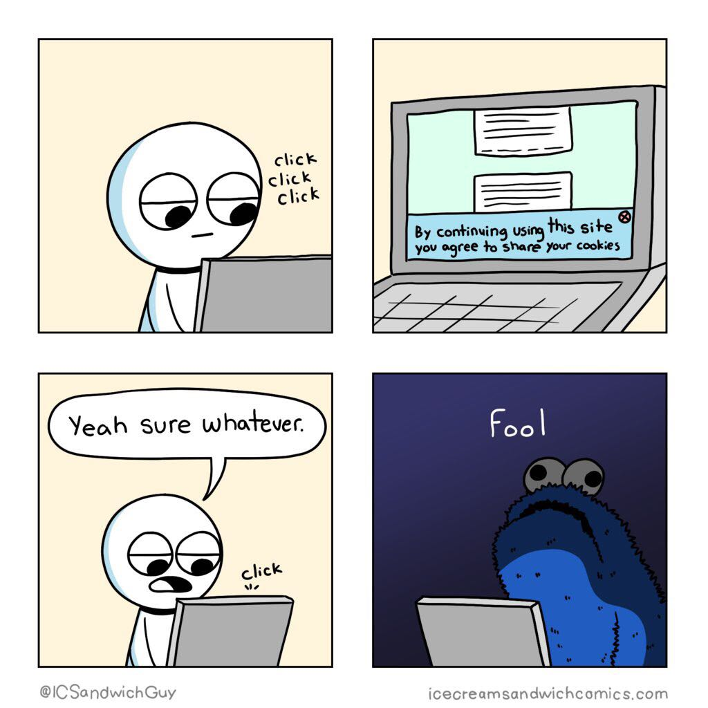
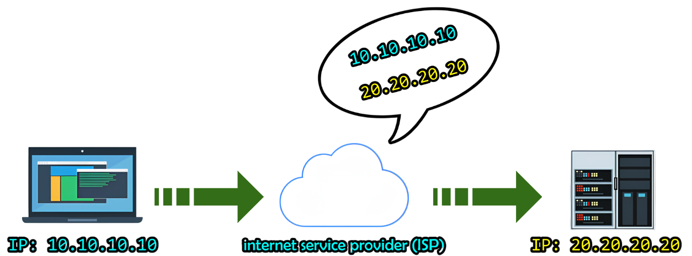
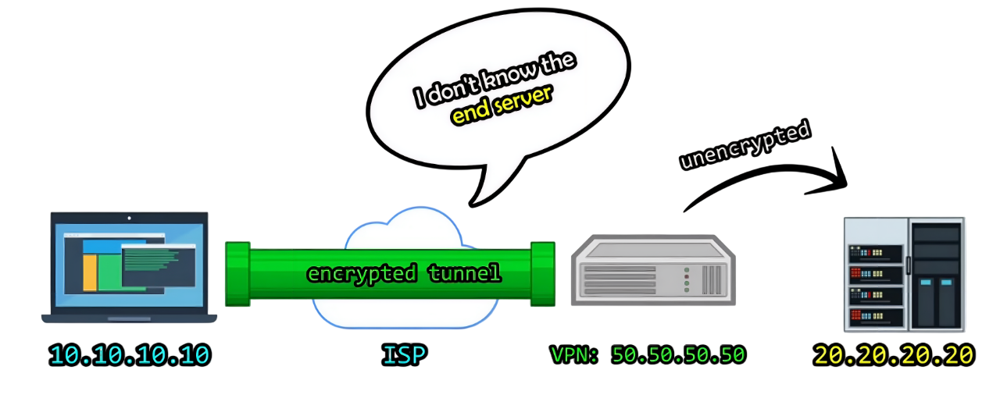
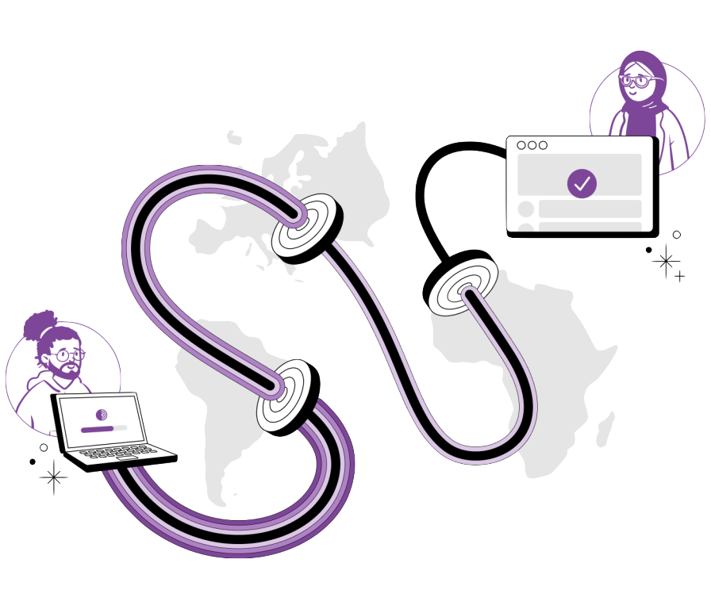
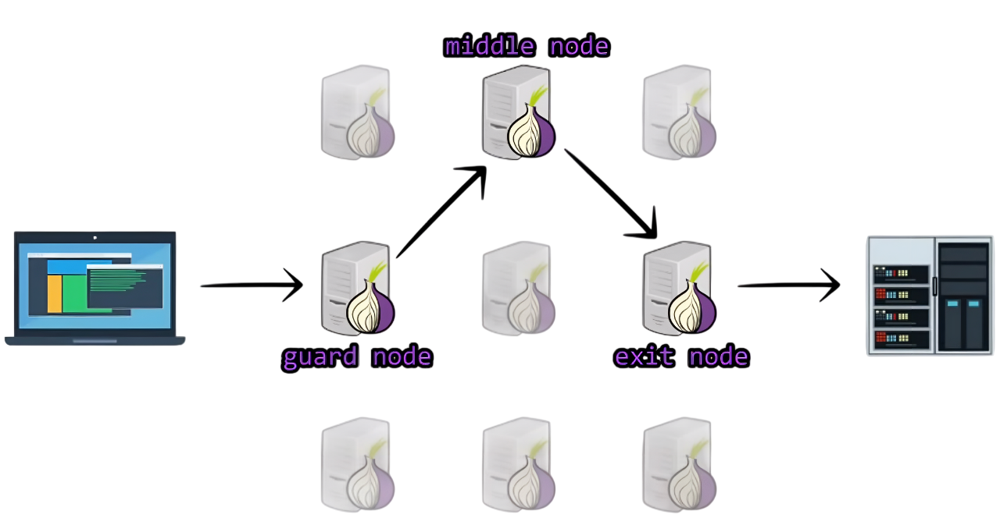
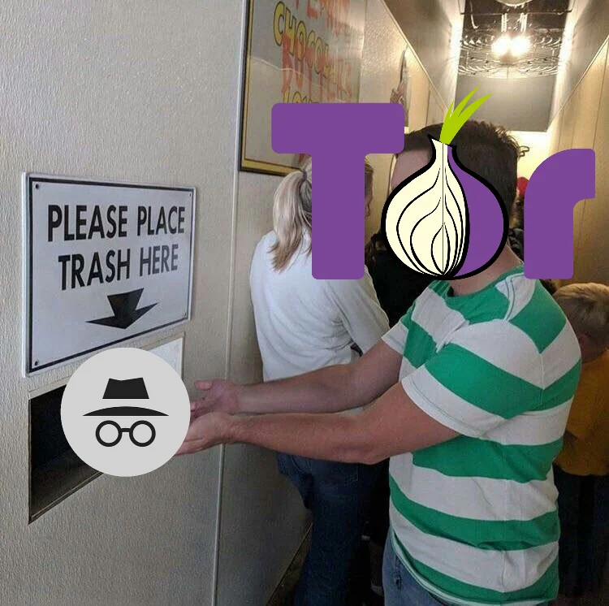
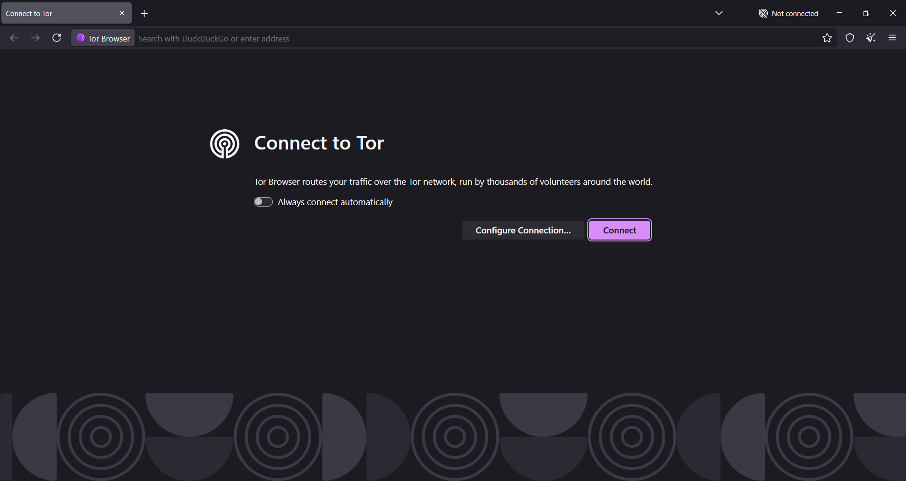
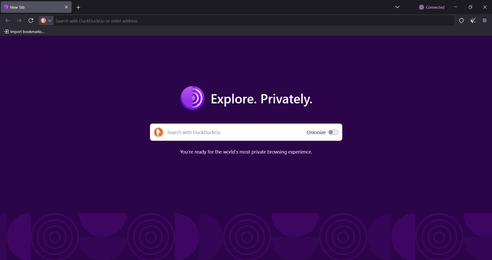
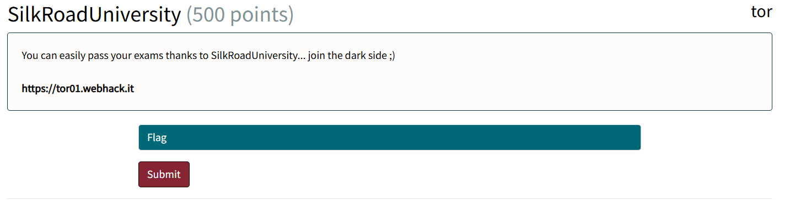
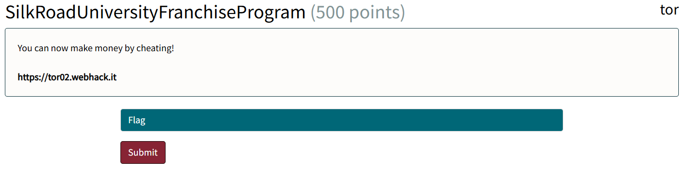

<!-- .slide: data-state="front hide-controls" --> <div id="title">Lab on TOR</div> <div id="subtitle">Data Privacy and Security</div> <div id="date">Data Science and Management (DASMA)</div> --- ## Why Do We Need Anonymous Communication? <div class="content-center"> <div class="columns-container columns-center"> <div class="col"> Whenever you go online you've got an audience you didn't ask for: <br/> - **Your ISP** - they can see everything you do on the Internet - **Websites** - tracking cookies, fingerprinting - **Advertisers** - they know your shoe size before you do! - **Law enforcement** - with a simple request to your ISP - That one guy at the free coffee shop Wi-Fi <br/> <br/> </div> <div class="col"> <p></p> </div> </div> </div> --- ## Regular Internet Browsing <div class="content-center"> <div class="cell-center"> <p></p> </div> <br/> Your ISP can see: - Your IP address (**who** you are) - The destination website (**where** you go) <br/> <div class="fragment" data-fragment-index="1"> <div class="alert alert-error"><b>PROBLEM:</b> Even with <b>HTTPS</b>, the destination (which website you visit) is still visible to your ISP!</div> </div> </div> --- ## VPN: A First Attempt at Privacy <div class="content-center"> <div class="cell-center"> <p></p> </div> <br/> A **VPN** (Virtual Private Network) creates an encrypted tunnel to a VPN server: - The ISP sees you connecting to the VPN server, but **not** the final destination (which is encrypted) - The **VPN provider sees everything**: your IP, the destination, and your traffic <br/> <div class="fragment" data-fragment-index="1"> <div class="alert alert-error"><b>PROBLEM</b>: You are just transferring trust from your ISP to the VPN provider!</div> </div> </div> --- ## Enter Tor - The Onion Routing <div class="content-center"> **Tor** is a free, open-source software for enabling **anonymous communication** over the Internet. <div class="columns-container columns-center"> <div class="col"> <div class="cell-center"> <p></p> </div> <br/> </div> <div class="col"> <div class="fragment" data-fragment-index="0"> Key properties: - Routes traffic through a network of **independently-operated servers** (relays) - Traffic is encrypted in **multiple layers** (like an onion) - **Decentralized**: no single entity can see both source and destination - **Open source**: anyone can audit the code and verify its security </div> </div> </div> <div class="fragment" data-fragment-index="1"> <div class="cell-center"> Tor provides **privacy by design** — the system is built so that no single party can deanonymize users. </div> <br/> </div> <div class="fragment" data-fragment-index="2"> <div class="cell-center"> As of 2024: **7,880+ relays** and **1,820+ bridges** operated by volunteers worldwide. </div> </div> </div> --- ## Tor: How it Works <div class="content-center"> Traffic travels through **3 randomly selected relays** (nodes): <p></p> <br/> <div class="fragment" data-fragment-index="1"> <div class="alert alert-note">Each node only knows its neighbors - <b>the full path is never visible to anyone</b>.</div> </div> </div> --- ## Tor: Why it Works <div class="content-center"> <div class="columns-container columns-center"> <div class="col"> Why Tor succeeds where other methods fail: - **No single point of failure** — it relies on 3 independent nodes - **No trust required** — no node knows both source and final destination address - **Decentralized** — many volunteer relays worldwide, not one corporate server - **No logs by design** — nodes physically can't log what they don't know - **Actually hides your traffic** — unlike incognito mode, which only hides your history from yourself! </div> <div class="col"> <p></p> </div> </div> </div> --- <!-- .slide: data-state="break-blue hide-controls" --> # Hidden Services (Onion Services) --- ## What are Hidden Services? <div class="content-center"> <div class="cell-center"> So far we have seen how Tor protects the **client** (Alice). But what about the **server**? </div> <br/> <div class="fragment" data-fragment-index="0"> **Hidden Services** (also called **Onion Services**) allow servers to offer services through Tor **without revealing their IP address**. <br/> </div> <div class="fragment" data-fragment-index="1"> Key properties: - The server's IP address and physical location remain **hidden** - Accessible only through the Tor network using a `.onion` address - Traffic between client and server is **end-to-end encrypted** within Tor - The traffic **never leaves the Tor network** (no exit relay needed) </div> </div> --- <div class="content-center"> Example `.onion` address (v3, 56 characters): <br/> <div class="cell-center"> `duckduckgogg42xjoc72x3sjasowoarfbgcmvfimaftt6twagswzczad.onion` </div> <br/> <br/> - The address is derived from the **site's public cryptographic key** - This means **the address itself IS the authentication** — no DNS, no certificate authority needed - **You can't spoof it**: if you reach the address, you're talking to the right server - **Only accessible through Tor** — your regular browser won't know what to do with it </div> --- ## Why Hidden Services? <div class="content-center"> The dark web has a reputation... but it's not all criminal: <br/> - **Whistleblowing platforms**: SecureDrop (used by The New York Times, The Guardian, etc.) - **Censorship-free forums**: news organizations, blogs in repressive regimes - **Private communication**: messaging services that resist surveillance - **Self-hosted services**: personal servers accessible without exposing your home IP <br/> <div class="fragment" data-fragment-index="0"> Many major websites offer `.onion` mirrors: Facebook, DuckDuckGo, BBC, ProtonMail, The New York Times, etc. <br/> </div> </div> --- <!-- .slide: data-state="break-green hide-controls" --> # A Practical Guide to Tor Browser --- ## Installing Tor Browser <div class="content-center"> The official download is at [torproject.org](https://www.torproject.org/) — and **ONLY** there. <br> ...but our lovely university Wi-Fi has other plans, so today we'll be using a mirror: <br> [techspot.com/downloads/5183-tor-browser.html](https://www.techspot.com/downloads/5183-tor-browser.html#certified) <br/> How can you be sure it's safe? **Verify its hash**: - Expected SHA256 hash (Windows installer): 958626901dbe17fc003ed671b61b3656375e6f0bc06c9dff60bd2f80d4ace21b - Expected SHA256 hash (MacOS installer): 29852c4f3aa3b77bccdf359c5a22cf3ffa49ad1828b3967fb722134ffdc29e20 </div> --- ## How to Compute SHA256 Hash of a File <div class="content-center"> Option A: upload it to VirusTotal ([virustotal.com](https://www.virustotal.com/gui/home/upload)), which will display the hash at the top of the results page. <br> Option B: command line: - Windows: `certutil nameofthefile.exe SHA256` - MacOS: `shasum -a 256 nameofthefile.dmg` <br/> <div class="alert alert-note">If they match the file is untampered i.e. <b>safe to use</b></div> </div> --- ## Tor Browser: Interface Overview <div class="content-center"> <div class="alert alert-hint">Hit <b>Connect</b> and Tor will establish a circuit through 3 random relays.</div> <br/> <p></p> </div> --- ## Tor Browser: Interface Overview <div class="content-center"> Success screen: <br/> <p></p> </div> --- ## Tor Browser: Golden Rule(s) <div class="content-center"> <div class="alert alert-error">DO <b>NOT</b> change the default settings. DO <b>NOT</b> install extensions. DO <b>NOT</b> "customize" things.</div> <br/> Why? Tor's anonymity works because every user looks the same - you don't want to stand out! <br/> <div class="fragment" data-fragment-index="1"> Settings You **CAN** Touch: - Bridges — hides the fact you're using Tor (useful where Tor is blocked) - HTTPS-Only Mode — enable in all windows (should be default) - Security Level — Safe / Safer / Safest - Search Engine — default is DuckDuckGo, keep it privacy-friendly </div> </div> --- ## Tor Browser: DOs and DONTs <div class="content-center"> <div class="columns-container columns-top"> <div class="col"> DOs: - Use it for **anonymous activities** (research, reading, browsing) - Use `.onion` links when available (sites only accessible through Tor) - **Keep Tor updated** — always use the latest stable version - **Be boring**. Blend in. Don't stand out. </div> <div class="col"> DONTs - DON'T **log into your personal accounts** (congratulations, you just deanonymized yourself!) - DON'T **open downloaded files** without disconnecting first (they may contact external servers outside Tor) - DON'T **brag** about using Tor on social media **with your real name** (bye bye anonimity!) </div> </div> </div> --- ## Time to Cook <div class="content-center"> </div> --- <!-- .slide: data-state="break-blue hide-controls" --> # SilkRoadUniversity <div class="content-center"> TOR Challenge 01 </div> --- ## SilkRoadUniversity - Reconnaissance <div class="content-center"> <p></p> <br/> What can we observe? The challenge... - presents a **dark-web academic marketplace** accessible only via a `.onion` address; - provides a **personal access token** tied to the user's email; - requires a **working Tor Browser setup** to reach the hidden service and claim the flag. </div> --- <!-- .slide: data-state="break-blue hide-controls" --> # SilkRoadUniversityFranchiseProgram <div class="content-center"> TOR Challenge 02 </div> --- <!-- .slide: data-auto-animate --> <h2 data-id="title">SilkRoadUniversityFranchiseProgram - Reconnaissance</h2> <div class="content-center"> <p></p> <br/> What can we observe? The challenge... - provides step-by-step instructions to spin up a Tor hidden service using Docker; - requires **embedding a personal franchise license code** in the hidden service's homepage; - asks for the resulting `.onion` address to verify it against the given license code. </div> --- ## Setting up your .onion hidden service <div class="content-center"> We said Tor can host websites, not just browse them. Let's prove it! <br> We'll spin up a hidden service using Docker — a server that's **only reachable through the Tor network**. - No domain registrar, - No hosting provider, - No paper trail. <br> Just you, an onion address, and 56 characters of pure anonymity. </div> --- ## What you need <div class="content-center"> Three ingredients: - A **web server** e.g. Nginx, serving a simple HTML page - A **Tor daemon** — connects to the Tor network and creates the `.onion` address - **Docker** — glues everything together <br/> Hidden service's folder structure: ```bash my-hidden-service/ ├── docker-compose.yml ├── torrc └── www/ └── index.html ``` </div> --- ## Step 1: The Web Page <div class="content-center"> Create a simple `index.html` file and store it in the `www` folder: <br> ```html <html> <body> <h1>My Secret Onion Shop</h1> <p>If you can read this, welcome to Tor.</p> </body> </html> ``` </div> --- ## Step 2: The Tor Configuration <div class="content-center"> Create a `torrc` file: ```python SocksPort 0 HiddenServiceDir /var/lib/tor/hidden_service/ HiddenServicePort 80 web:80 Log notice stdout ``` <br/> - SocksPort 0 — we're not browsing, just hosting - HiddenServiceDir — where Tor stores your keys and .onion address - HiddenServicePort 80 web:80 — maps .onion port 80 to the Nginx container </div> --- ## Step 3: Docker Compose <div class="content-center"> ```yaml services: web: image: nginx:alpine volumes: - ./www:/usr/share/nginx/html:ro tor: image: alpine:3.19 command: sh -c "apk add --no-cache tor && chmod 700 /var/lib/tor/hidden_service && tor -f /etc/tor/torrc" volumes: - ./torrc:/etc/tor/torrc:ro - tor_data:/var/lib/tor/hidden_service depends_on: - web volumes: tor_data: ``` </div> --- ## Step 4: Launch and Wait <div class="content-center"> ```bash docker compose up -d docker compose logs -f tor ``` <br/> Wait for the magic words: ```bash Bootstrapped 100% (done): Done ``` <br/> <div class="alert alert-warning">This takes 30–60 seconds. Tor is generating your keys, building circuits, and publishing your service descriptor to the network.</div> </div> --- ## Step 5: Get your .onion address <div class="content-center"> ```python docker compose exec tor cat /var/lib/tor/hidden_service/hostname ``` <br/> You'll get something like: <br> `x3b2yi7kfcq...something...d.onion` <br> That's it. That's your address. Paste it in Tor Browser and you'll see your page! </div>